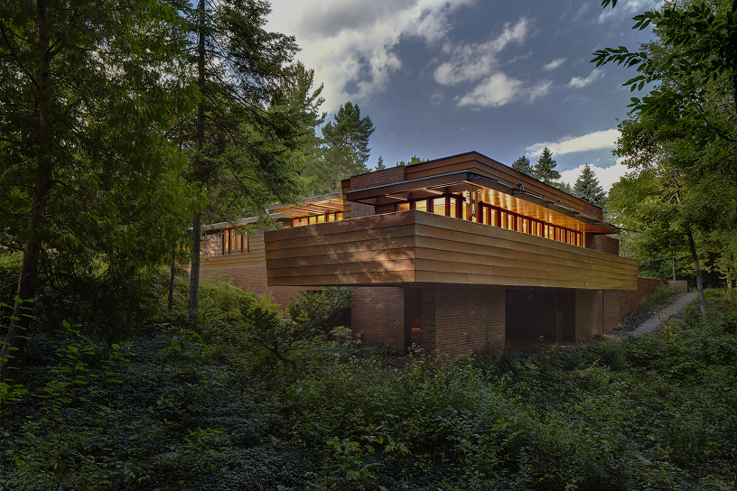
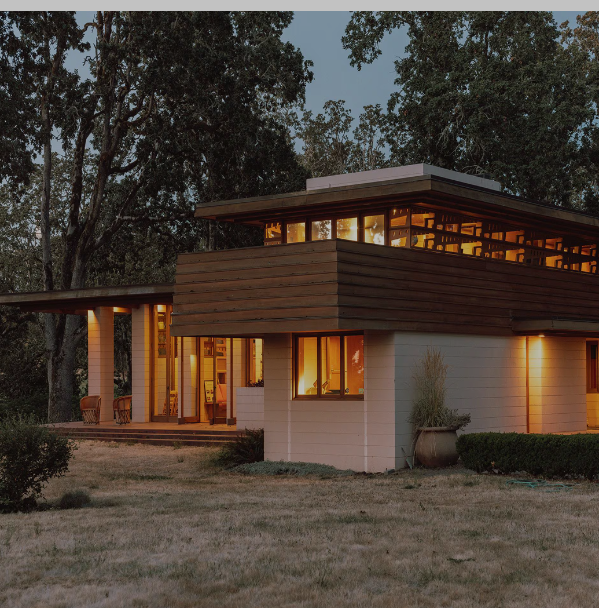

The Spaces He Shapes ®

‘ The space within becomes
the reality of
the building. ‘
here you can see all of he’s creation
A look into the visionary world of
Frank Lloyd Wright through some
of his most iconic architectural
creations
0/6
Explore
the architect
The
Gordon House

In 2001, the Gordon House was
saved from destruction and
moved to Silverton through an
agreement between the
Conservancy and the Oregon
Garden Foundation.
 .
.
In January 2001, The Conservancy signed an
agreement with the Oregon Garden
Foundation to move the Gordon House a 40-
mile drive south to the Oregon Garden in
Silverton.
En 2000, le terrain a été vendu et les
nouveaux propriétaires ne voulaient
pas conserver la maison.
A Historic Move
to Preserve Frank
Lloyd Wright’s Legacy
The Gordon House is
located in Silverton,
Oregon, next to the
Oregon Garden
Interior

The house was sited in an oak grove on The Garden
grounds
to match the Wilsonville site as closely as
possible. The house retains the true north compass
orientation to meet Frank Lloyd Wright’s design
specifications for natural light and ventilation. The
painstaking reassembly of the Gordon House took nine
months. The view of the Willamette River has been
replaced with a serene rural vista, evocative of the
original farm setting.
The footings were built.
Constructed the foundational basement to house
heating, plumbing, and electrical systems.